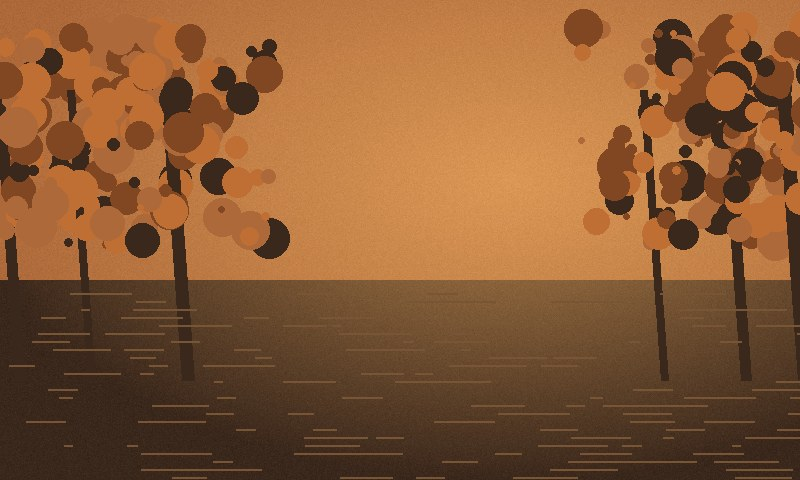

Личный дневник
Каким был
этот день?
Собери слова, фотографии и музыку в одно воспоминание. Вернись к нему, когда захочется снова почувствовать этот день.

Личный дневник
Собери слова, фотографии и музыку в одно воспоминание. Вернись к нему, когда захочется снова почувствовать этот день.
